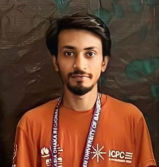

Empirical Study on the Characteristics and Evolution of AI-usage in GitHub Repositories: Evidence from Code Comments
arXiv:2606.06843
Analyzes 35,361 code comments to examine how developers use and revise AI-generated code.
PhD researcher in Computer Science.
Former Software Engineer at TigerIT.
ICPC World Finalist.

I study AI-assisted software development, coding agents, and technical debt.
arXiv:2606.06843
Analyzes 35,361 code comments to examine how developers use and revise AI-generated code.
ACM/IEEE International Conference on Technical Debt · TechDebt 2026
Identifies 81 instances of self-admitted technical debt in 6,540 comments referencing AI use.
International Conference on Mining Software Repositories · MSR 2026 · Mining Challenge
Studies approximately 33,000 agent-authored pull requests and analyzes rejection reasons in 600 cases.
Research on AI coding agents and software maintenance.
Advisor: Dr. Mia Mohammad Imran.
Worked on number plate recognition, object tracking, face recognition, message delivery, and healthcare data integration.
Taught algorithms and data structures, coached ICPC teams, and helped organize programming contests.
Worked on recommender-system prototypes using text retrieval and collaborative filtering.
Honorable mention, 2021 World Finals.
Dhaka · November 2022.
ICPC 2021 contest edition, held in 2022.
Candidate Master.
Awarded at the 21st convocation for contributions to competitive programming and mentoring.